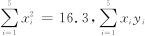

绝密★启用前
2019-2020学年度徐浩翔学校3月月考卷
试卷副标题
考试范围：全册书考试时间：120分钟命题人：年级主任满分：150分
注意事项：
1．答题前填写好自己的姓名、班级、考号等信息
2．请将答案正确填写在答题卡上
第I卷（选择题)
请点击修改第I卷的文字说明
一、单选题
1．若，且，则的最小值是（ ）
A． B． C． D．10
2．若直线的方向向量为，平面a的法向量为，则可能使的是（ ）
A．， B．，
C．， D．，
3．如图是某几何体的三视图，且正视图与侧视图都是上底为2，下底为4，高为2的等腰梯形，则该几何体的表面积为（ ）

A． B． C． D．
4．复数对应的点位于（ ）
A．第一象限 B．第二象限 C．第三象限 D．第四象限
5．已知函数（），若有两个相异实根，则实数的取值范围是 ( )
A． B． C． D．
6．、已知点A(x,5)关于点(1,y)的对称点(-2,-3)，则点P(x,y)到原点的距离是( )
A．4 B． C． D．
7．已知双曲线 ：（，）的左右焦点分别为，，若该双曲线与抛物线
：（，）的左右焦点分别为，，若该双曲线与抛物线 ：
： 有公共焦点，点A是曲线
有公共焦点，点A是曲线 ，在第一象限的交点，且，则双曲线的离心率为（ ）
，在第一象限的交点，且，则双曲线的离心率为（ ）
A． B． C． D．
8．已知向量，，且，则 等于（ ）
等于（ ）
A．3 B．-3 C． D．
9．在中，角 ，
， ，的对边分别是，
，的对边分别是， ，，且，则角
，，且，则角 的大小为（ ）
的大小为（ ）
A． B． C． D．
10．已知一组数据的平均数，方差，则数据的平均数、方差分别为（ ）
A．9,12 B．9,36 C．11,12 D．11,36
11．书架上有不同的语文书10本，不同的英语书7本，不同的数学书5本，现从中任选一本阅读，不同的选法有( )
A．22种 B．350种 C．32种 D．20种
12．设实数满足不等式组，则的取值范围是（ ）
A． B． C． D．
13．下列关于古典概型的说法中正确的是( )
①试验中所有可能出现的基本事件只有有限个；
②每个事件出现的可能性相等；
③每个基本事件出现的可能性相等；
④基本事件的总数为n，随机事件A若包含k个基本事件，则.
A．②④ B．③④ C．①④ D．①③④
二、多选题
14．下列各小题中，最大值是的是（ ）
A． B．
C． D．
15．在发生公共卫生事件期间，有专业机构认为该事件在一段时间内没有发生大规模群体感染的标志为“连续天，每天新增疑似病例不超过人”．过去 日，甲、乙、丙、丁四地新增疑似病例数据信息如下，则一定符合该标志的是（ ）
日，甲、乙、丙、丁四地新增疑似病例数据信息如下，则一定符合该标志的是（ ）
甲地：总体平均数 ，且中位数为
，且中位数为 ；
；
乙地：总体平均数为 ，且标准差；
，且标准差；
丙地：总体平均数，且极差；
丁地：众数为，且极差 ．
．
A．甲地 B．乙地 C．丙地 D．丁地
第II卷（非选择题)
请点击修改第II卷的文字说明
三、填空题
16．已知甲、乙两位射手,甲击中目标的概率为,乙击中目标的概率为,如果甲乙两仁射手的射击相互独立,那么甲乙两射手同时瞄准一个目标射击,目标被射中的概率为_________.
17．若，，是平面内的三点，设平面 的法向量
的法向量 ，则______________
，则______________
18．已知，则曲线在点 处的切线的斜率为___________．
处的切线的斜率为___________．
19．向量满足，则___________．
20．若曲线在 处的切线与直线
处的切线与直线 垂直，则实数
垂直，则实数 等于______
等于______
21．若 在圆的直径上,则直线
在圆的直径上,则直线 的方程是_______.
的方程是_______.
22．已知P是抛物线y2＝2x上动点，A，若点P到y轴的距离为d1，点P到点A的距离为d2，则d1＋d2的最小值是________.
23．已知的展开式二项式系数和为64，则展开式中常数项是___．（用数字作答）
24．设变量x，y满足条件，则的最小值为______．
25．已知，则_____
四、解答题
26．解关于不等式: ().
27．在中，已知角A、B、C所对的三条边分别是a、b、c且满足b2=ac.
(1)求证：；
(2)求函数的值域.
28．数列 是单调递增的等差数列，，是方程的两实数根；
是单调递增的等差数列，，是方程的两实数根；
（1）求数列的通项公式；
（2）设，求的前n项和．
29．某地种植常规稻A和杂交稻B，常规稻A的亩产稳定为500公斤，今年单价为3.50元／公斤，估计明年单价不变的可能性为10%，变为3.60元／公斤的可能性为60%，变为3.70元／公斤的可能性为30%．统计杂交稻B的亩产数据，得到亩产的频率分布直方图如下；统计近10年来杂交稻B的单价（单位：元/公斤）与种植亩数（单位：万亩）的关系，得到的10组数据记为，并得到散点图如下，参考数据见下．
（1）估计明年常规稻A的单价平均值；
（2）在频率分布直方图中，各组的取值按中间值来计算，求杂交稻B的亩产平均值；以频率作为概率，预计将来三年中至少有二年，杂交稻B的亩产超过765公斤的概率；
（3）判断杂交稻B的单价y（单位：元/公斤）与种植亩数x（单位：万亩）是否线性相关？若相关，试根据以下的参考数据求出y关于x的线性回归方程；调查得知明年此地杂交稻B的种植亩数预计为2万亩．若在常规稻A和杂交稻B中选择，明年种植哪种水稻收入更高？
统计参考数据：，，，，
附：线性回归方程，．
30．某公司的管理者通过公司近年来科研费用支出x(百万元)与公司所获得利润y(百万元)的散点图发现，y与x之间具有线性相关关系，具体数据如下表：
年份 | 2010 | 2011 | 2012 | 2013 | 2014 |
科研费用x(百万元) | 1.6 | 1.7 | 1.8 | 1.9 | 2.0 |
公司所获利润y(百万元) | 1 | 1.5 | 2 | 2.5 | 3 |
(1)求y关于x的回归直线方程；
(2)若该公司的科研投入从2011年开始连续10年每一年都比上一年增加10万元，预测2017年该公司可获得的利润约为多少万元．
31．
（1）求角A的大小；
（2）若，D是BC的中点，求AD的长.
32．沿海某市为了进一步完善海防生态防护体系，林业部门计划在沿海新建防护林万亩，从 年开始，每年春季在规划的区域内植树造林，第一年植树亩，以后每一年比上一年多植树
年开始，每年春季在规划的区域内植树造林，第一年植树亩，以后每一年比上一年多植树 亩，假设所植树木全部成活．
亩，假设所植树木全部成活．
（Ⅰ）求到哪一年春季新建防护林计划全部完成；
（Ⅱ）若每亩新植树苗的木材量为立方米，且所植树木每一年从春季开始生长，到年底停止生长时木材量的年自然增长率为，到新建防护林计划全部完成的那一年底，新建防护林的木材总量为多少立方米．（参考数据：）
33．已知函数，其中.
（I）判断并证明函数的奇偶性；
（II）判断并证明函数 在上的单调性；
在上的单调性；
（III）是否存在这样的负实数 ，使对一切
，使对一切 恒成立，若存在，试求出
恒成立，若存在，试求出 取值的集合；若不存在，说明理由.
取值的集合；若不存在，说明理由.
34．某不透明纸箱中共有4个小球，其中1个白球，3个红球，它们除颜色外均相同．
（Ⅰ）一次从纸箱中摸出两个小球，求恰好摸出2个红球的概率；
（Ⅱ）每次从纸箱中摸出一个小球，记录颜色后放回纸箱，这样摸取4次，记得到红球的次数为 ，求
，求 的分布列；
的分布列；
（Ⅲ）每次从纸箱中摸出一个小球，记录颜色后放回纸箱，这样摸取100次，得到几次红球的概率最大？只需写出结论．
参考答案
1．A
【来源】河南省八市学评2018-2019学年高二12月测评数学（文)试题
【解析】
【分析】
先判断3x与3y的符号，利用基本不等式建立关系，结合x+y＝5，可求出3x+3y的最小值．
【详解】
由3x＞0，3y＞0，
∴3x+3y≥2
所以3x+3y的最小值为18
故答案为：A
【点睛】
本题主要考查了均值不等式的性质和应用，解题时要注意公式的正确应用，属于基础题．在利用基本不等式求最值时，要特别注意“拆、拼、凑”等技巧，使其满足基本不等式中“正”(即条件要求中字母为正数)、“定”(不等式的另一边必须为定值)、“等”(等号取得的条件)的条件才能应用，否则会出现错误.
2．D
【来源】山西省太原市2018-2019学年高二上学期期末考试数学理试题
【解析】
【分析】
若 ，则，因此只需向量数量积为0即可.
，则，因此只需向量数量积为0即可.
【详解】
A中，所以排除A；B中，所以排除B；
C中，所以排除C；D中，所以 ，能使
，能使 .
.
故选D
【点睛】
本题主要考查空间向量的方法判断线面平行，由向数量积为0即可，属于基础题型.
3．C
【来源】2019年浙江省名师原创预测卷（二)
【解析】
【分析】
由三视图可得该几何体是上底面半径为 ，下底面半径为，高为2的圆台，求得母线长后，利用圆台表面积公式即可得解.
，下底面半径为，高为2的圆台，求得母线长后，利用圆台表面积公式即可得解.
【详解】
由题意可知，该几何体是上底面半径，下底面半径 ，高为2的圆台，
，高为2的圆台，
可得圆台的母线长，
所以该几何体的表面积.
故选：C.
【点睛】
本题考查了三视图的识别与几何体表面积的求解，考查了运算求解能力与空间思维能力，属于基础题.
4．D
【来源】2015届吉林省长春市普通高中高三质量监测（二)文科数学试卷（带解析)
【解析】
试题分析：由题意可得：. 故选D.
考点：1.复数的除法运算;2.以及复平面上的点与复数的关系
5．B
【来源】2015-2016学年河北省石家庄市二中高一下开学考试数学卷（带解析)
【解析】
试题分析：将 转化为
转化为 ，
，
令解得 ，当，，函数是单调递减函数，
，当，，函数是单调递减函数，
当，，函数是单调递增函数，当时函数取得最小值，
当 时，函数的最小值是，
时，函数的最小值是，
若 有两个相异实根，
有两个相异实根，
所以
考点：函数的零点
【方法点睛】主要考察了导数的应用问题，属于中档题型，当考察函数零点的个数问题，以及恒成立或存在的问题时，都可以采用参变分离的方法，比如此题类型（1）若 有两个相异零点问题，采用参变分离后为，等价于与有两个相异交点，那转化为根据导数求函数图像和值域；（2）若恒成立的问题，也可以参变分离，比如
有两个相异零点问题，采用参变分离后为，等价于与有两个相异交点，那转化为根据导数求函数图像和值域；（2）若恒成立的问题，也可以参变分离，比如 等价于；（3）若是存在问题，参变分离后，存在区间使，等价于.
等价于；（3）若是存在问题，参变分离后，存在区间使，等价于.
6．D
【来源】2012-2013学年吉林省吉林一中高一上学期期末考试数学试题（带解析)
【解析】
要求两点间的距离，关键求出P坐标.
由中点坐标公式得出
化入两点间距离公式求得P(4,1)到原点(0，0)的距离为 ，故选D.
，故选D.
7．A
【来源】山东省滨州市博兴县2018-2019学年高二上学期期中数学试题
【解析】
【分析】
根据抛物线的方程可得 ，
， ，利用焦半径公式可得点
，利用焦半径公式可得点 的坐标，进而利用双曲线的定义和勾股定理得到的值，再代入离心率公式.
的坐标，进而利用双曲线的定义和勾股定理得到的值，再代入离心率公式.
【详解】
由题意得：，，设，
， ，
，
轴， ，
，
 ，
，
 .
.
故选：A.
【点睛】
本题考查双曲线与抛物线的位置关系、焦半径公式、离心率的求解，考查函数与方程思想、转化与化归思想，考查逻辑推理能力、运算求解能力.
8．C
【来源】2016届陕西黄陵中学高三下二模考试数学（文)试卷（带解析)
【解析】
试题分析：由已知，，又，故，所以
.
考点：向量平行等价条件、三角函数同角关系式．
9．A
【来源】河南省安阳市2019-2020学年高三第一次调研考试数学（文)试题
【解析】
【分析】
先利用正弦定理化边为角可得，再进一步化简求出即可得出角A．
【详解】
∵，
由正弦定理可得 ，即
，即 .∵，∴
.∵，∴ .∵，∴.选A．
.∵，∴.选A．
【点睛】
本题主要考查正弦定理及三角恒等变换，属中等难度题．
10．D
【来源】福建省龙岩市一级达标校2017-2018学年高一下期期末考试数学试题
【解析】
分析：由题意结合平均数，方程的性质即可求得新数据的平均数和方差.
详解：由题意结合平均数，方程的性质可知：
数据的平均数为：，方差为.
本题选择D选项.
点睛：本题主要考查平均数的性质，方差的性质等知识，意在考查学生的转化能力和计算求解能力.
11．A
【来源】内蒙古集宁一中(西校区)2018-2019学年高二6月月考数学（理)试题
【解析】
【分析】
从中任选一本阅读，选择的方法有三类，故选择1本书的方法需要分三种情况讨论，再利用加法原理解决问题.
【详解】
解：由题意知本题是一个分类计数问题，
解决问题分成三个种类，一是选择语文书，有10种不同的选法；
二是选择英语书，有7种不同的选法，
三是选择数学书，有5种不同的选法，
根据分类计数原理知，共有10+7+5＝22种不同的选法.
【点睛】
本题考查分类计数原理，本题解题的关键是看清楚完成一件事包含有几类情况，计算出每一类所包含的基本事件数，进而相加得到结果.
12．B
【来源】黑龙江省鹤岗市第一中学2019届高三上学期第二次月考数学（理)试题
【解析】
【分析】
作出不等式组 表示的可行域，就是可行域内的点到原点距离的平方，利用数形结合即可得结果.
表示的可行域，就是可行域内的点到原点距离的平方，利用数形结合即可得结果.
【详解】
设，则的几何意义为动点到原点距离的平方，
作出不等式组，对应的平面区域如图，
由图象可知点到原点的距离最大，
 最大值为4，
最大值为4，
原点到直线 的距离最小，
的距离最小，
的最小值为，
 的取值范围是，故选B.
的取值范围是，故选B.
【点睛】
本题主要考查点到直线的距离公式，以及简单线性规划的应用，利用目标函数的几何意义是解决线性规划问题的基本方法，利用数形结合是解决本题的关键.
13．D
【来源】黑龙江省牡丹江市第一高级中学2018-2019学年高二上学期期末考试数学（理)试题
【解析】
【分析】
利用随机试验的概念及古典概型及其概率计算公式直接求解．
【详解】
在①中，由随机试验的定义知：试验中所有可能出现的基本事件只有有限个，故①正确；
在②中，由随机试验的定义知：每个基本事件出现的可能性相等，故②错误；
在③中，由随机试验的定义知：每个基本事件出现的可能性相等，故③正确；
在④中，基本事件总数为n，随机事件A若包含k个基本事件，则由古典概型及其概率计算公式知P（A），故④正确．
故选D．
【点睛】
本题考查命题真假的判断，是基础题，解题时要认真审题，注意随机试验的概念及古典概型及其概率计算公式的合理运用．
14．BC
【来源】专题06不等式-2020年新高考新题型多项选择题专项训练
【解析】
【分析】
利用基本不等式的性质即可判断出结论． 直接用基本不等式，用基本不等式变式，
直接用基本不等式，用基本不等式变式，
 先变形再用基本不等式，D先构造满足基本不等式条件后再用基本不等式可解.
先变形再用基本不等式，D先构造满足基本不等式条件后再用基本不等式可解.
【详解】
没有最大值；
 ，， ，当且仅当x时取等号．
，， ，当且仅当x时取等号．
时，． 时，，当且仅当时取等号．
时，，当且仅当时取等号．
D．，，当且仅当 时取等号．
时取等号．
故选：BC．
【点睛】
本题考查利用基本不等式求函数最值.
利用基本(均值)不等式解题一定要注意应用的前提“一正”“二定”“三相等”．所谓“一正”是指正数，“二定”是指应用基本(均值)不等式求最值时，和或积为定值，“三相等”是指满足等号成立的条件．
15．CD
【来源】山东省青岛市胶州市2019-2020学年高一下学期期中学业水平检测数学试题
【解析】
【分析】
根据条件，举例说明甲地和乙地，根据极差的概念，说明每天新增疑似病例的最大值，判断丙地和丁地.
【详解】
甲地：满足总体平均数 ，且中位数为，举例7天的新增疑似病例为0，0，0，0，5，6，7，则不符合该标志；
，且中位数为，举例7天的新增疑似病例为0，0，0，0，5，6，7，则不符合该标志；
乙地：若7天新增疑似病例为1，1，1，1，2，2，6，满足平均数为2，标准差，
但不符合该标志；
丙地：由极差 可知，若新增疑似病例最多超过5人，比如6人，那么最小值不低于4人，
可知，若新增疑似病例最多超过5人，比如6人，那么最小值不低于4人，
那么总体平均数就不正确，故每天新增疑似病例低于5人，故丙地符合该标志；
丁地：因为众数为1，且极差，所以新增疑似病例的最大值，所以丁地符合该标志.
故选：CD
【点睛】
本题考查统计的实际应用，重点考查统计的相关概念，以及举例推理的能力，属于基础题型.
16．.
【来源】上海市浦东新区2018届高三5月综合练习（三模)数学试题
【解析】
【分析】
目标被射中的对立事件为目标未被击中，即甲乙均未射中，利用对立事件概率计算公式直接求解.
【详解】
甲、乙两位射手，甲击中目标的概率为0.7，乙击中目标的概率为0.6，
甲乙两位射手的射击相互独立，甲乙两射手同时未中的概率为，
所以目标被射中的概率为，故答案为0.88．
【点睛】
本题考查概率的求法，考查对立事件概率计算公式等基础知识，考查运算求解能力，考查函数与方程思想，是基础题．
17．2：3：（-4）
【来源】2010年陕西省汉中市汉台区高二上学期期末数学理卷
【解析】
解：
18．
【来源】河北省邯郸市六校2019届高三上学期期中大联考数学（文科)试题
【解析】
【分析】
利用官员发先求得函数的解析式，再求得导函数，即可求得在点处的切线的斜率.
【详解】
已知 ，
，
令，则，
所以，
则
∵求得导函数可得，
∴.
由导数几何意义可知在点 处的切线的斜率为
处的切线的斜率为 ，
，
故答案为：
【点睛】
本题考查了利用换元法求函数解析式，由导数几何意义求得切线斜率，属于中档题.
19．4
【来源】2015-2016学年江苏省泰州中学高二下二次质检理科数学卷（带解析)
【解析】
【分析】
【详解】
试题分析：由于，则，，则
，， 4.
4.
考点：平面向量的运算
20．
【来源】江苏省淮安市淮海中学2019届高三上学期第二阶段测试数学试题
【解析】
【分析】
求出的导函数，可得曲线在 处切线的斜率为
处切线的斜率为 ，根据两直线垂直斜率之间的关系求解即可.
，根据两直线垂直斜率之间的关系求解即可.
【详解】
，
，
即曲线在处切线的斜率为 ，
，
又 该切线与垂直，
该切线与垂直，
，故答案为.
【点睛】
本题主要考查利用导数求切线斜率及两直线垂直斜率之间的关系，属于中档题. 应用导数的几何意义求切点处切线的斜率，主要体现在以下几个方面：(1) 已知切点求斜率,即求该点处的导数；(2) 己知斜率 求切点即解方程；(3) 巳知切线过某点(不是切点) 求切点, 设出切点利用求解.
求切点即解方程；(3) 巳知切线过某点(不是切点) 求切点, 设出切点利用求解.
21．x-y-1=0
【来源】题组训练一 4.1.1 圆的标准方程-2019届高中数学同步“教材变式 对接考点”题组高端训练（必修2)
【解析】
【分析】
由圆的方程可得圆心坐标，从而得直线 的斜率，由点斜式即可得解.
的斜率，由点斜式即可得解.
【详解】
设圆心为C,则C(1,0),由直线AB经过圆心C(1,0)及点 ，可得直线AB斜率为，
，可得直线AB斜率为，
所以直线AB方程为 ,
即.
故答案为： .
.
【点睛】
本题主要考查了圆的标准的方程及由两点坐标求直线方程，属于基础题.
22．
【来源】专题9.7抛物线（练)-江苏版《2020年高考一轮复习讲练测》
【解析】
【分析】
由抛物线的方程及点A的坐标可判断点A在抛物线的外部。由抛物线的定义可得d1＝PF－ ，进而可得d1＋d2＝PF＋PA－
，进而可得d1＋d2＝PF＋PA－ ，由图可知当三点P、F、A共线时，取最小值即为AF－
，由图可知当三点P、F、A共线时，取最小值即为AF－ ，再由两点间的距离公式可求得结果。
，再由两点间的距离公式可求得结果。
【详解】
因为，所以点A在抛物线的外部。因为点P在抛物线上，所以d1＝PF－ (其中点F为抛物线的焦点)，则d1＋d2＝PF＋PA－≥AF－
(其中点F为抛物线的焦点)，则d1＋d2＝PF＋PA－≥AF－ ＝，当且仅当点P是线段AF与抛物线的交点时取等号.
＝，当且仅当点P是线段AF与抛物线的交点时取等号.
【点睛】
本题主要考查抛物线的方程与定义，考查分析求解、转化能力，属于基础题。在求抛物线上的点到准线的距离时，注意其与抛物线上的点到焦点距离的互相转化。
23．60
【来源】黑龙江省牡丹江市第一高级中学2018届高三上学期期末考试数学（理)试题
【解析】
因为展开式二项式系数和为64，所以，，展开式的通项为 ，令，得，所以常数项为第5项，，故填.
点睛：涉及二项式展开式的特定项，一般要先写出二项式的展开式的通项公式，根据特定项的特点确定r,从而求出特定项或与题目有关的问题，一般会求常数项.
24．
【来源】2020届辽宁省大连市高三上学期第三次模拟考试数学（文)试题
【解析】
【分析】
本题主要考查线性规划的基本知识，先画出约束条件的可行域，再求出可行域中各角点的坐标，将各点坐标代入目标函数的解析式，分析后易得目标函数的最小值．
【详解】
解：由约束条件 得如图所示的三角形区域，
得如图所示的三角形区域，
令 ，
，
显然当平行直线过点时，
z取得最小值为；
故答案为： ．
．
【点睛】
在解决线性规划的小题时，我们常用“角点法”，其步骤为：由约束条件画出可行域求出可行域各个角点的坐标将坐标逐一代入目标函数验证，求出最优解．
25．
【来源】浙江省杭州地区（含周边)重点中学2018-2019学年高一上学期期中联考数学试题
【解析】
【分析】
令 得
得 ，可得，从而可得到所求的函数解析式.
，可得，从而可得到所求的函数解析式.
【详解】
由题意，得，
因为 ，
，
则 ，
，
，故答案为.
【点睛】
本题主要考查函数解析式的求法，属于中档题.求函数的解析式常见题型有以下几种：（1）根据实际应用求函数解析式；（2）换元法求函数解析式，利用换元法一定要注意，换元后参数的范围；（3）待定系数法求函数解析式，这种方法适合求已知函数名称的函数解析式；（4）消元法求函数解析式，这种方法求适合自变量互为倒数或相反数的函数解析式.
26．见解析
【来源】福建省三明市第一中学2016-2017学年高二下学期第一次月考数学（理)试题
【解析】试题分析：比较 ，分三种情况讨论解得不等式解集。
原不等式可化为： ，
令，则，
①当即时，原不等式的解集为；
②当即时，原不等式的解集为；
③当即时，原不等式的解集为.
27．(1)证明见解析；(2).
【来源】2011—2012学年辽宁省丹东市宽甸二中高二月考文科数学试卷
【解析】
【分析】
(1)由题意结合均值不等式的结论和余弦定理求得的范围即可确定角的范围；
(2)首先整理所给函数的解析式，然后结合(1)中求得的角的范围和三角函数的性质即可确定函数的值域.
【详解】
（1），，
当且仅当时等号成立，
.
（2），
，
当时，，
当时，函数的值：，
故.
【点睛】
本题主要考查余弦定理的应用，均值不等式的应用，三角函数值域的求解等知识，意在考查学生的转化能力和计算求解能力.
28．（1）（2）
【来源】湖北省荆州中学、宜昌一中等“荆、荆、襄、宜四地七校考试联盟”2019届高三上学期期末考试数学（文)试题
【解析】
【分析】
（1）将看成一个整体，利用一元二次方程的解法、等差数列的通项公式即可得出；
（2）先利用对数恒等式解得，再利用等比数列求和即可得出．
【详解】
（1），
∴或4，
，，
又是递增的等差数列，
所以， ，公差d=，所以.
（2），
.
【点睛】
本题考查了指数与二次的复合方程的解法、等差数列的通项公式、等比数列的前n项和公式，考查了推理能力与计算能力，属于中档题．
29．（1）3.62（元／公斤）； （2）；（3）明年选择种植杂交稻B收入更高.
【来源】广东省揭阳市2019届高三一模数学（理科)试题
【解析】
【分析】
（1）先求分布列，再根据数学期望公式得结果，（2）根据组中值与对应概率乘积的和求平均值，根据独立重复试验概率公式求概率，（3）根据散点图判断是否线性相关，代入公式求，根据求 ，根据线性回归方程估计明年杂交稻B的单价，再乘以亩产平均值得收入，根据每年常规稻A的单价比当年杂交稻B的单价高50%得明年常规稻A的单价，再乘以500得收入，最后比较收入大小得结论.
，根据线性回归方程估计明年杂交稻B的单价，再乘以亩产平均值得收入，根据每年常规稻A的单价比当年杂交稻B的单价高50%得明年常规稻A的单价，再乘以500得收入，最后比较收入大小得结论.
【详解】
（1）设明年常规稻A的单价为 ，则
，则 的分布列为
的分布列为
| 3.50 | 3.60 | 3.70 |
P | 0.1 | 0.6 | 0.3 |
，
估计明年常规稻A的单价平均值为3.62（元／公斤）；
（2）杂交稻B的亩产平均值为：．
依题意知杂交稻B的亩产超过765公斤的概率为：，
则将来三年中至少有二年，杂交稻B的亩产超过765公斤的概率为：
．
（3）因为散点图中各点大致分布在一条直线附近，所以可以判断杂交稻B的单价y与种植亩数x线性相关，
由题中提供的数据得：，由 ，
，
所以线性回归方程为，
估计明年杂交稻B的单价 元／公斤；
元／公斤；
估计明年杂交稻B的每亩平均收入为元／亩，
估计明年常规稻A的每亩平均收入为元／亩，
因1905>1875，所以明年选择种植杂交稻B收入更高．
【点睛】
函数关系是一种确定的关系，相关关系是一种非确定的关系.事实上，函数关系是两个非随机变量的关系，而相关关系是非随机变量与随机变量的关系.如果线性相关，则直接根据用公式求，写出回归方程，回归直线方程恒过点.
30．（1）；（2）4.5(百万元)
【来源】黑龙江省海林市朝鲜族中学人教版高中数学必修三同步练习：模块终结测评(二)
【解析】
【分析】
⑴根据表中数据，计算出，，求出回归系数，写出回归直线方程
⑵由题知年时科研投入为百万元，代入回归方程即可求得结果
【详解】
(1)经计算可得
＝1.8，＝2，＝18.5，
 ＝＝＝5，
＝＝＝5，
＝－＝2－5×1.8＝－7.
故所求的回归直线方程为＝5x－7.
(2)由题可知到2017年时科研投入为2.3百万元，故可预测该公司所获得的利润约为5×2.3－7＝4.5(百万元)．
【点睛】
本题主要考查了回归直线方程，理解、掌握相关的概念是解答本题的关键，属于基础题。
31．（1）（2）
【来源】宁夏石嘴山市第三中学2017届高三下学期第三次模拟考试数学（文)试题
【解析】
试题分析：根据二倍角余弦公式，然后“边化角”，借助和角公式化简，得出角 ；再根据余弦定理求出边
；再根据余弦定理求出边 ，由于三边满足勾股定理，判断三角形为直角三角形，再利用勾股定理求出中线的长.
，由于三边满足勾股定理，判断三角形为直角三角形，再利用勾股定理求出中线的长.
试题解析：（1）由正弦定理可得，，
从而可得.
又为三角形的内角，所以，于是，又为三角形内角，∴ .
.
（2）解法一：由余弦定理得：，
又∵，∴是直角三角形，，
∴，∴.
解法二：∵，
∴，∴ .
.
32．（Ⅰ） 年；（Ⅱ）立方米.
年；（Ⅱ）立方米.
【来源】山东省威海市文登区2019-2020学年高二上学期期末数学试题
【解析】
【分析】
（Ⅰ）设第 年春季植树为亩，由题意知数列
年春季植树为亩，由题意知数列 是首项为
是首项为 ，公差为的等差数列，利用等差数列的求和公式可得出关于的方程，解出正整数
，公差为的等差数列，利用等差数列的求和公式可得出关于的方程，解出正整数 的值，即可得出结论；
的值，即可得出结论；
（Ⅱ）设从年开始第 年年底种植树木到
年年底种植树木到 年底的木材量为数列，根据题分别计算出、、、，并设，利用错位相减法可求得，进而可得出结果.
年底的木材量为数列，根据题分别计算出、、、，并设，利用错位相减法可求得，进而可得出结果.
【详解】
（Ⅰ）设第 年春季植树为
年春季植树为 亩，由题意可知，
亩，由题意可知，
（常数），所以 为等差数列．
为等差数列．
设植树 年新建防护林计划全部完成，则，化简得，所以．
年新建防护林计划全部完成，则，化简得，所以．
，所以到 年新建防护林计划全部完成；
年新建防护林计划全部完成；
（Ⅱ）设从 年开始第
年开始第 年年底种植树木到
年年底种植树木到 年底的木材量为数列
年底的木材量为数列 ，
，
则，， ，．
，．
则本材总量，
，
所以
，
解得，所以到年底新建防护林的木材总量为 立方米．
立方米．
【点睛】
本题主要考查数列的应用，解题关键是要读懂题目的意思，根据题目给出的条件，找出合适的等量关系，列出方程，再求解，是中档题．
33．（1）见解析（2）见解析（3）
【来源】四川省棠湖中学2017-2018学年高一下学期期末数学试题
【解析】
分析：（I）根据函数奇偶性的定义进行判断即可．
（II）根据函数单调性 定义进行判断．
（III）根据函数奇偶性和单调性的关系将不等式进行转化，利用参数分离法进行求解即可．
详解：
（I）∵ ，
，
∴ 是奇函数.
是奇函数.
（II） 在上为减函数.
在上为减函数.
证明：任取且，
则
，
∵ ，
∴，
得，得到，
∴在 上为减函数；
上为减函数；
（III）∵ ，
∵ 在
在 上为减函数，
上为减函数，
∴对 恒成立
恒成立
由对 恒成立得：
恒成立得：
对 恒成立，
恒成立，
令，
∵，∴，
∴，得，
由对恒成立得：
，由对 恒成立得：，
恒成立得：，
即综上所得：，
所以存在这样的 ，其范围为
，其范围为 .
.
点睛：本题主要考查不等式恒成立以及函数奇偶性和单调性的判断，利用函数奇偶性和单调性的定义是解决本题的关键．
34．(Ⅰ) (Ⅱ) 见解析（Ⅲ）75
【来源】北京市人大附中2019届高考信息卷(二)理科数学试题
【解析】
【分析】
(Ⅰ)直接利用公式求得结果即可；
（Ⅱ）由题摸一次是红球的概率为又是有放回的摸出小球，所以满足二项分布，可得结果；
（Ⅲ）因为随机摸一次摸到红球的概率为，由此摸100次，得到75次概率最大.
【详解】
解：(Ⅰ)设“一次从纸箱中摸出两个小球，恰好摸出2个红球”为事件A．
则．
(Ⅱ) 可能取0，1，2，3，4．
可能取0，1，2，3，4．
，，
，，
．
所以的分布列为
| 0 | 1 | 2 | 3 | 4 |
P |
（Ⅲ）75．
【点睛】
本题考查了离散随机变量分布列，熟悉二项分布是解题的关键，属于中档题.